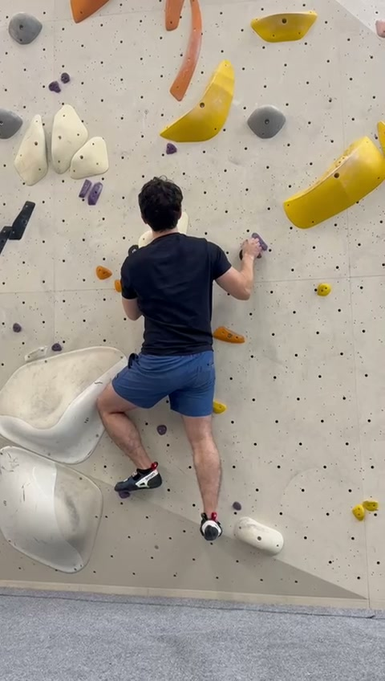
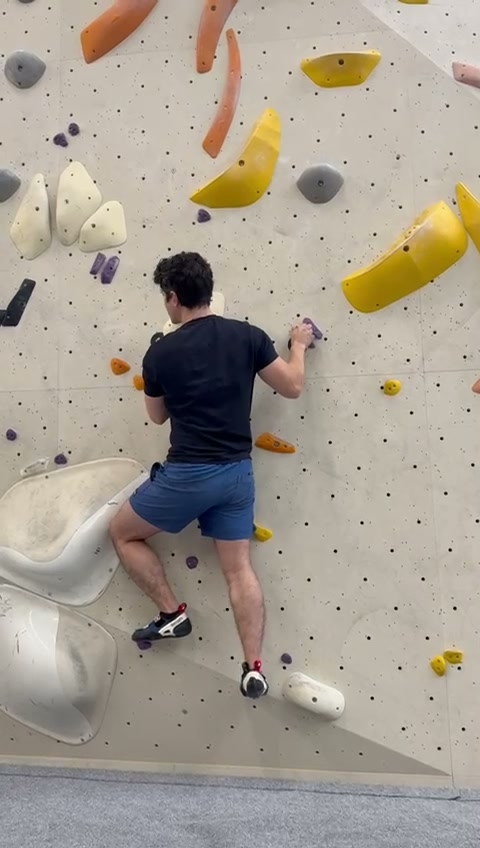
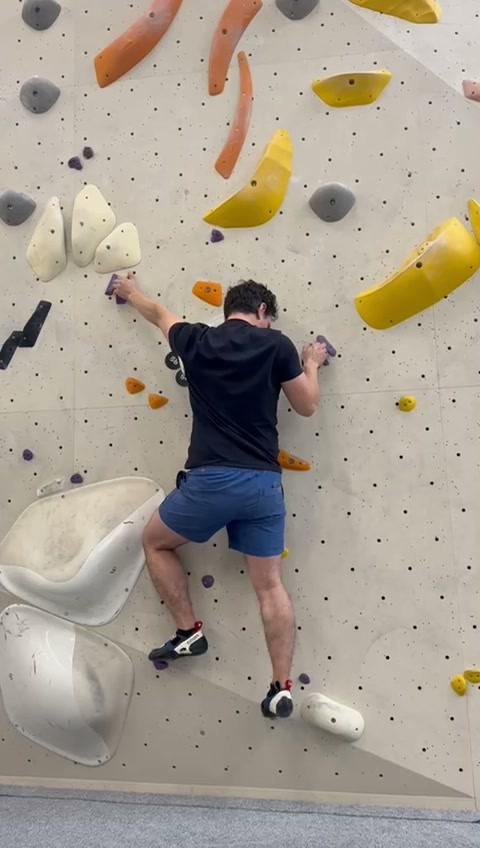
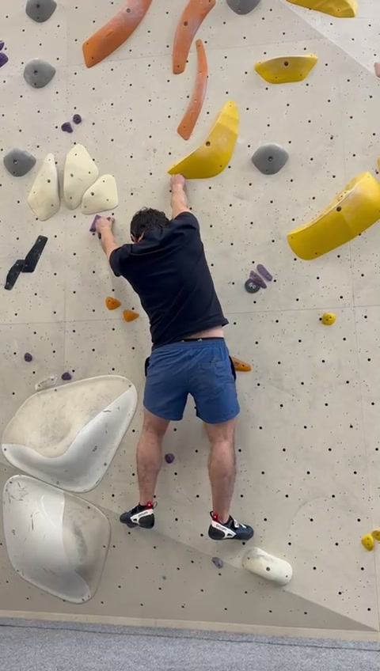
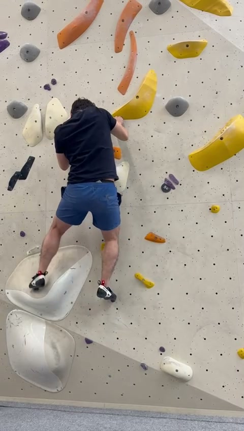
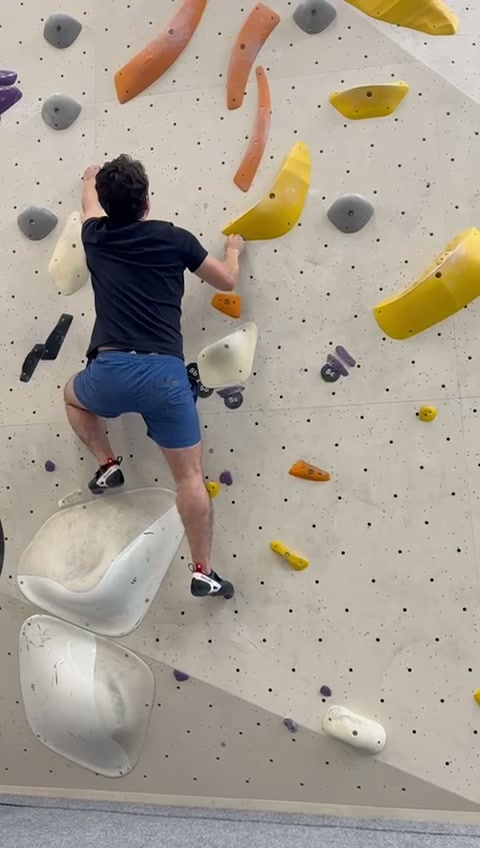
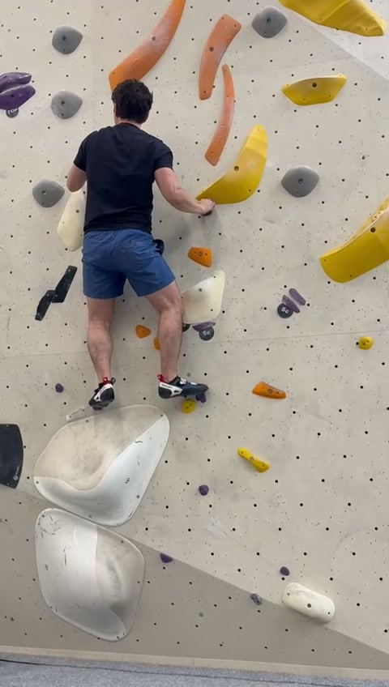
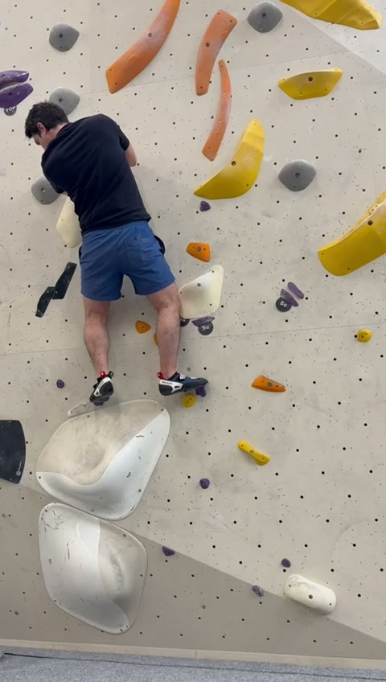
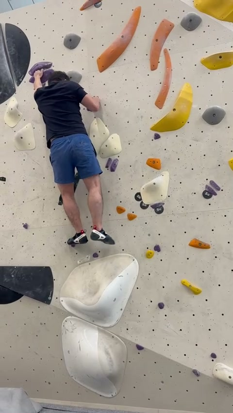
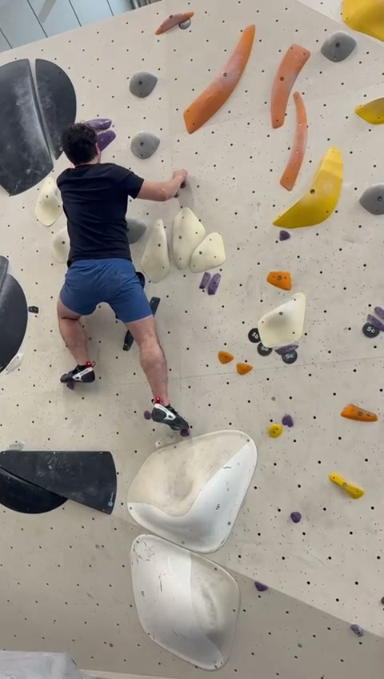

📸 Extracted Frames
10 key moments captured at ~4.4-second intervals across the 48-second climb










🔬 Frame-by-Frame Analysis
Movement phases mapped across the complete climb sequence
1 Initiating the Sequence
Giselle starts low on the wall in a compressed stance — left knee deeply bent (~90°+), both hands gripping purple holds at shoulder-to-head height. The right foot trails lower, establishing a stable triangular base. Toe placement on the left foot is precise (toe-down on the volume), showing excellent footwork discipline.
Centre of gravity sits low and centred between both feet, biased toward the loaded left foot. Hips are largely square to the wall — acceptable for setup, though earlier hip rotation would reduce arm load.
2 Pre-loading the Drive Leg
Weight shifts decisively over the left foot. The deep knee bend positions hips almost directly above the left toe — biomechanically ideal for the upcoming drive phase. The left hip begins rotating toward the wall, a subtle but positive shift that narrows her profile.
Right leg extends behind/below in a nascent flag position, providing counter-rotation stability. The "coiled spring" compression in the left leg stores potential energy for upward movement.
3 Twist-Lock Execution
The defining moment: left hip turns decisively into the wall — a textbook twist-lock/Egyptian technique. This extends reach on the left hand, reduces effective distance to the next hold, and keeps the CoG close to the wall plane despite the dynamic movement.
The left leg is clearly the primary driver — pushing through the foot to propel upward as the knee extends from the compressed position. The right leg extends diagonally behind as a flag, preventing barn-door swing. Hands are well-separated (high-left, mid-right) creating a wide upper-body support base.
4 Full Extension Reached
Near the apex of the drive sequence — both arms reaching overhead, body elongated. Both feet bear weight on holds at knee-to-thigh height, knees moderately bent. The feet have tracked upward with the hands (not lagging below), preventing the overloaded "stretched out" position.
Hips return toward square as both hands settle on high holds — natural during a two-hand stabilisation phase. This is an ideal moment for route-reading the next sequence.
5 Frog Position on Volume
Both feet now stand on the large white volume — a wide-kneed, deep-squat "frog" position. Hands are close together (near-matched) on the dual slopers above, signalling preparation for a significant reach. The wide platform provides much more security than small footholds.
Despite the protruding volume, Giselle keeps her torso close to the wall surface — excellent spatial awareness. Standing on a rounded/sculpted volume requires good proprioception and ankle stability, both well-demonstrated here.
6 Reset & Weight Redistribution
Transitional position as Giselle redistributes weight. Left hand on a white sloper at head height, right hand reaching toward a banana-shaped hold. Left foot uses inside-edge placement on the volume with visible knee bend; right foot on a smaller hold with precise toe-tip placement.
The right arm extends relatively straight — good energy conservation on the reaching side. Both feet have advanced upward, maintaining the base of support close to the hands rather than dangling low.
7 The High-Step — Crux Move
The crux moment. Left foot executes a demanding high-step — placed at approximately hip height or higher, requiring significant hip flexion, quad engagement, and ankle mobility. The body is maximally compressed: head close to the wall, knees deeply flexed, both arms loaded at tight angles (~90°).
A subtle but biomechanically correct right-hip-out rotation opens the left hip joint, allowing the knee to track upward efficiently. This "get small before getting tall" pattern is textbook for generating height without dynamic movement.
8 Driving Through the High-Step
The payoff: Giselle has extended dramatically from the compressed Frame 7 position. Left leg — now the primary driver — has straightened significantly as she pushes upward. Left hand reaches a new hold at full overhead extension while the right arm stabilises at chest height.
Pronounced left-hip-in twist-lock lengthens the left arm's reach by rotating the shoulder girdle closer to the wall. The right leg trails as a counterbalance flag, preventing barn-door rotation. The compress → drive → extend pattern is executed with control and precision.
9 Establishing the New Position
Four-point stable contact achieved high on the wall. Both hands on the upper hold cluster at head-to-shoulder height, both feet on holds with intentional edging. Weight distribution is relatively even between both feet, with the left (higher) foot carrying slightly more load.
Feet are well-positioned relative to hips — not dangling, keeping the majority of weight on the larger, more fatigue-resistant leg muscles. Torso is close to the wall surface, which is critical as the wall angle may increase here.
10 Ready for the Top
Giselle is at the highest point of the captured sequence, firmly established above all crux sections. Active foot placement on both holds — deliberately edging and toeing rather than passively resting. Head position suggests route-reading the final moves.
This is the ideal moment to shake out each hand individually while weighting the feet, plan the next 2–3 moves, and identify the optimal hand-foot sequence before committing to the send.
📊 Performance Summary
Key strengths to reinforce and targeted areas for growth
💪 Strengths
- Leg-driven movement: Giselle consistently generates propulsion from leg extension rather than arm pulling — the hallmark of energy-efficient climbing. Quads and glutes do the heavy lifting while arms guide and stabilise.
- High-step execution: The crux high-step (Frame 7→8) shows impressive hip flexibility, quad strength, and the discipline to compress fully before extending. She commits to the position without hesitation.
- Hip turn awareness: Multiple frames show deliberate twist-lock technique to extend reach on the driving side. This is an intermediate-to-advanced skill executed naturally.
- Toe precision: Across all 10 frames, foot placements are intentional and toe-first — no sloppy flat-footing. This maximises hold contact and enables more powerful pushes.
- Volume confidence: Standing balanced on the 3D sculpted volume shows spatial awareness and ankle stability. She treats volumes as opportunities, not obstacles.
- Progressive foot tracking: Feet consistently move upward with the hands, maintaining an efficient CoG rather than hanging stretched out on the arms.
🎯 Areas for Growth
- Straight-arm resting: In setup phases (Frames 1–2, 6), both arms are bent simultaneously. Hanging on straight arms (engaging the skeleton over musculature) during static moments would significantly reduce forearm pump.
- Complete leg extension: During drive phases, there's sometimes residual bend in the pushing leg at the moment of reach. Fully straightening the knee would maximise height gained per move — even 2–3 cm matters on hard problems.
- Hip-to-wall distance: In several frames (especially Frame 4), a small gap appears between hips and wall. Consciously pressing hips closer (pelvic tilt toward the wall) would reduce the lever-arm load on fingers.
- Deliberate flagging: The trailing-leg counterbalance is functional but could be more intentional. Sharper inside/outside flags would provide cleaner rotational control and smoother movement.
- Earlier hip rotation: Hip turns tend to begin mid-move rather than being initiated from the setup position. Starting the rotation earlier would make the drive phase more seamless.
- Route-reading in rest positions: Head orientation in stable stances suggests focus on the immediate hold rather than scanning 2–3 moves ahead. Anticipation unlocks smoother sequences.
🗣️ Coaching Cues
Specific, actionable phrases to use during training sessions
Hang on Your Bones
Before each move, check: "Am I hanging on muscle or skeleton?" If both arms are bent and you're not actively moving, straighten at least one arm completely. Let the elbow lock, shoulder engage passively, and your forearms recover.
Turn Before You Reach
You already use hip turns beautifully (Frame 3 & 8) — now start them earlier. As you set your feet and load the drive leg, begin rotating the reaching-side hip into the wall before your hand leaves the hold. This pre-rotation makes the reach feel effortless.
Finish the Push
Your leg drive is already a major strength — take it to 100%. When driving upward, think about fully straightening the pushing leg before committing to the reach. That last 10% of knee extension is free height.
Hips Kiss the Wall
After each move, do a quick hip check: is there space between your pelvis and the wall? If so, tilt your hips forward. Every centimetre closer reduces finger load exponentially. Think of your hips as magnets drawn to the wall surface.
Flag with Intent
You naturally trail the non-driving leg for balance — brilliant instinct. Now make it deliberate: choose inside flag (leg crosses behind the standing leg) or outside flag (leg extends to the same side) based on the rotation you need. A purposeful flag transforms balance from reactive to proactive.
Eyes Up, Two Moves Ahead
In your rest positions (Frames 5, 9, 10), you have perfect stability for route-reading. Use these moments to look past the next hold and identify the hold after that. Knowing where you're going after the next move lets you set up body position in advance.
Exhale on the Drive
Pair your breathing with your movement phases: inhale during compression and setup, exhale sharply through the drive phase (when the legs push). This stabilises the core, increases power output, and prevents breath-holding which accelerates pump.
Trust Your High-Steps
Your high-step technique is genuinely impressive — the flexibility, commitment, and drive-through are all there. Keep pushing the height of your high-steps in training. You clearly have the hip mobility; now build the confidence to use it on harder problems where the consequence feels bigger.
The Big Picture
Giselle's climbing shows a strong foundation of movement quality over brute strength. The leg-first approach, natural hip turns, and precise footwork are exactly what coaches look for. The improvements are refinements, not rebuilds — she's building on solid technique, not fixing broken habits.